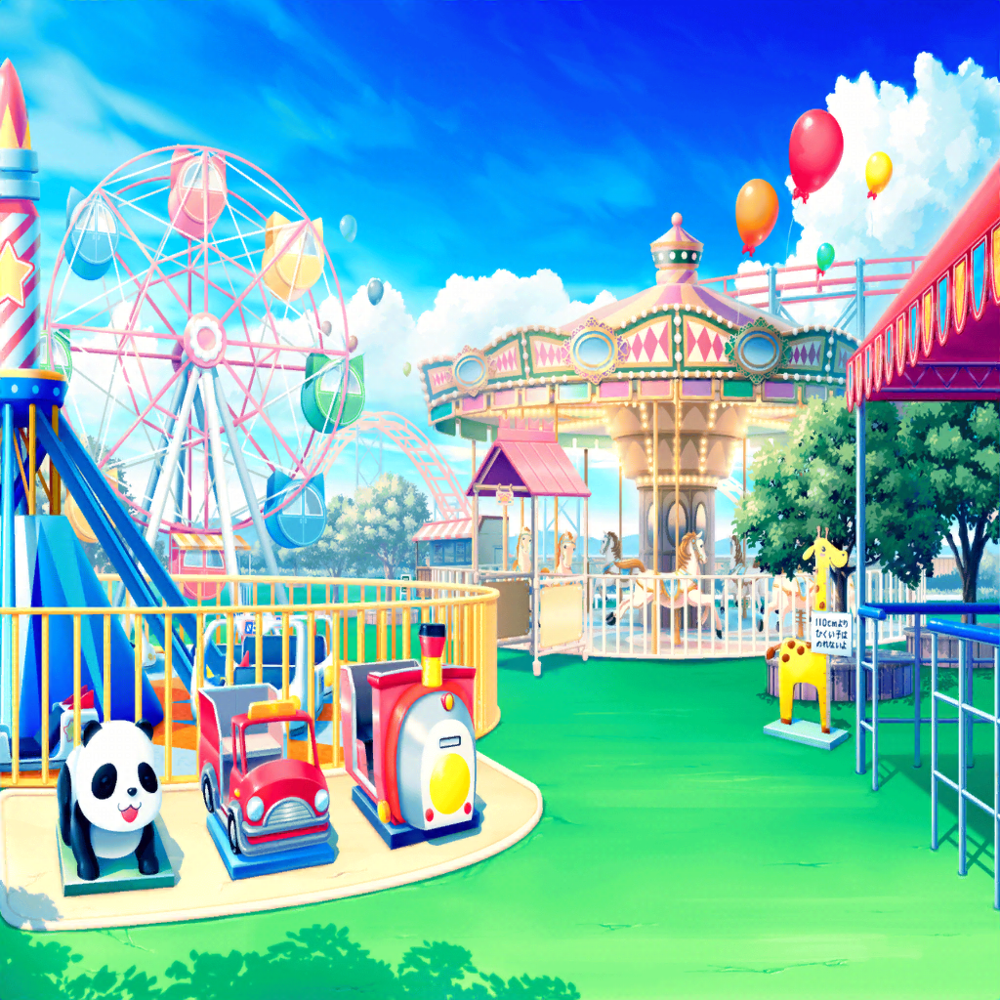

花咲川スマイル遊園地
花音
この遊園地に来るのも久しぶりだね
美咲
ですねー。あたし達がパレードしてからちょっと経ちましたからね
こころ
美咲ー！ 花音ー！ はぐみー！
早く早く〜！！ 一緒にメリーゴーラウンドに乗りましょう！
薫
以前私を見つめていた儚い木馬にもう一度会いたいんだ
美咲
あー、はいはい
花音
ふふ。美咲ちゃん、行こう！
はぐみ
はあ〜、楽しかったあー！
お客さんもたっくさんいるね！
美咲
あたし達がいなくなったあとも、盛り上がってるみたいだね
こころ
どこを見ても笑顔しかないわ！
とーーっても幸せな場所ね！
花音
社長さんも、私達のパフォーマンスが
刺激になったって言ってたよね
薫
社長さん自身も、笑顔になれる取り組みを
いろいろとはじめているようだね
美咲
いやあ、なんかいいことしたんだな〜あたし達
花音
うん！ チャレンジしてよかったよね
はぐみ
ね、次は壁画を見に行こうよっ！！
みんなの描いた絵、もう一回見たいっ！
こころ
賛成よっ！
さっそく行きましょうっ！！
花音
えっと……壁画は確かあっちのほうだったかな？
美咲
花音さん、逆です逆！
こっち！
壁画前
薫
確か壁画はこの辺りだった気がするが……
はぐみ
わあ……っ！！！！
みんな、見て！！！
こころ
まあ！
小さい子達が壁画になにか描いているわ！
美咲
ホントだ。
あたし達の描いた絵が、さらに賑やかになってるね
はぐみ
ねえ、みんな！
何描いてるの？
子供A
たのしいことー！
子供B
ねー！
こころ
たのしいこと？
子供A
あのね、ここはたのしかったことをかくばしょなんだって！
子供B
えっとね……みんなのたのしいをかくところ……
なんとかがき……なんだっけ？
美咲
えっとー……寄せ書き？
子供B
そう！ よせがきー！
きょう、すっごくたのしかったからそのきもちを
ここにかいてるんだー！
花音
ここにニコニコマークが描いてあるね
薫
こっちにはかわいらしいペンギンが描いてあるよ
はぐみ
これは、宝箱かなっ？
美咲
なるほどねー。楽しいことを書く、寄せ書き広場かあ
こころ
ん〜〜〜〜〜〜〜〜〜っ！！！！！
やっぱりあたし、みーーーーんなの笑顔が大好きだわっ！！！
花音
こころちゃん、すっごく嬉しそうだね
こころ
だってそうじゃない！
あたし達がいなくったって、この壁画やパレードがあれば
いつまでもずーっと笑顔が続いていくのよ！
こころ
笑顔と笑顔がつながっていくの！
これって、とっても素敵なことだわ！
美咲
確かに、最初はあたし達がいなくなったら……なんて
考えたこともあったけど、余計な心配だったみたいだね
こころ
……この感じ、他にもどこかで……あっ！！
こころ
絵本！ 絵本だわ！
薫
どういうことだい？
こころ
あたしは絵本が大好きなの。何度読んでも笑顔になれるもの。
これって、この壁画と同じじゃないかしら？
美咲
壁画も、絵本も笑顔になれる。
笑顔がモノになった……みたいな？
こころ
そう！ 笑顔って、こうやって形になって
残していけるのね！
薫
確かに笑顔はとても儚いものだ。
それがこうして形となって、ずっと続いていけるのは
さらに儚いことだね
花音
私も絵本が大好きだから、こころちゃんの気持ちわかるな。
この遊園地をもう一度盛り上げて、笑顔を形に残せた。
これって――
こころ
なんだか、あたし達も遊園地っていう
おっきな絵本を描いたみたいな感じがするわね！！
美咲
こころ、スケールでかすぎ
はぐみ
笑顔が形に、かあ……
はぐみ、みんなと一緒に水族館に行った時に買った
ラッコのリュックを見ると、今でも楽しい気持ちになるんだ
こころ
そう！ はぐみのそれと同じよっ！
薫
私は、大好きなシェイクスピアの戯曲がそれかもしれない。
それから……この、儚い世界も！
美咲
途中までいい感じだったのに……
こころ
美咲にとって、あたしの絵本みたいなものは何かしら？
美咲
あたし？ うーん、そうだな……
羊毛フェルト、とかはまあ形に残るよね
美咲
あ、でも一番は……
美咲
ミッシェルかも。ミッシェルを見ると、その……
まあ、あたしも笑顔になれるっていうか
美咲
あたしの、大切な相方だしね
こころ
やっぱり美咲は、ミッシェルととっても仲良しなのね！
ん〜〜〜〜〜っ！ ねえ、みんな！
こころ
これからも、世界を笑顔でいっぱいにしていきましょう！
こころ
何百年も経って、いつかあたし達がいなくなっても、
ずっとずーーっと笑顔が残るように
こころ
そんなあたし達でいましょうっ！